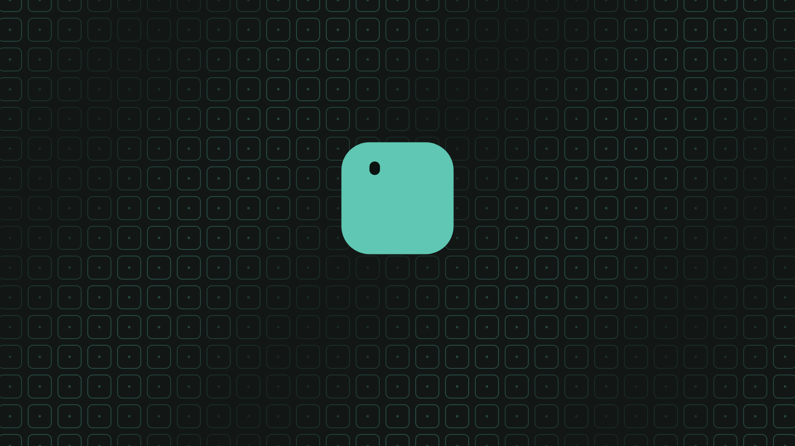
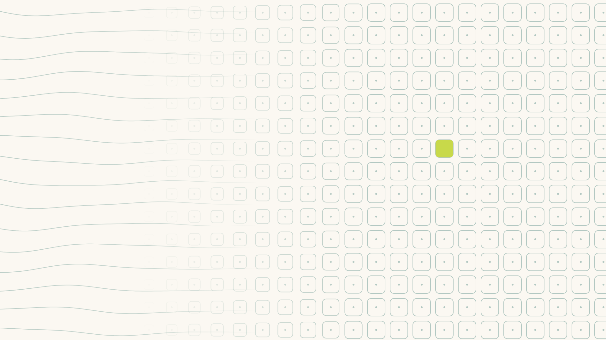
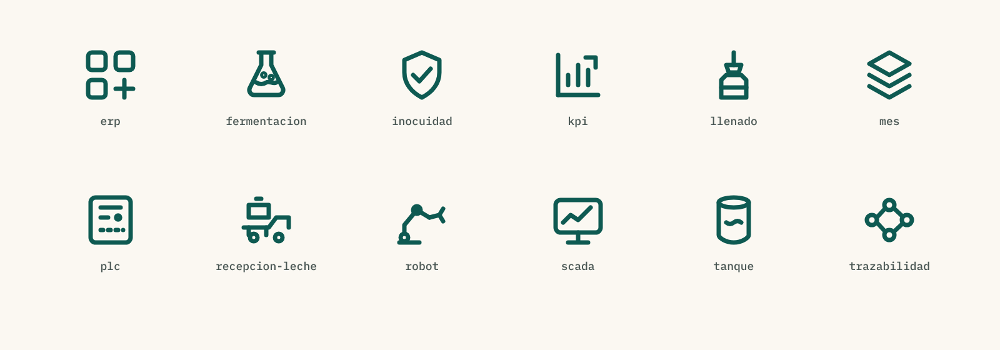
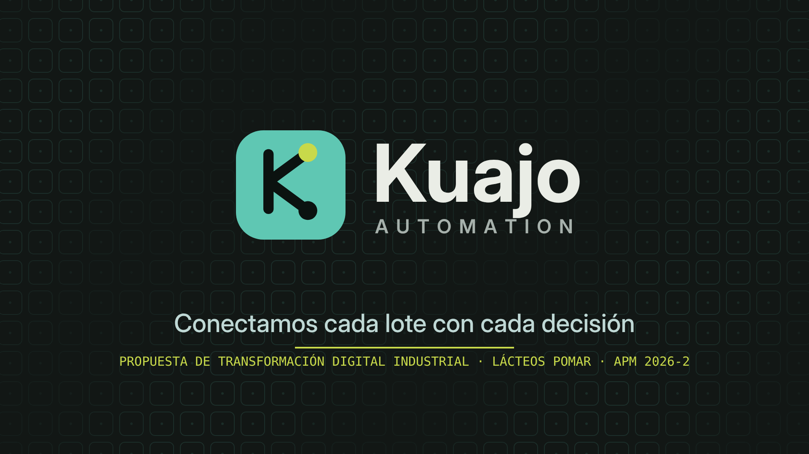
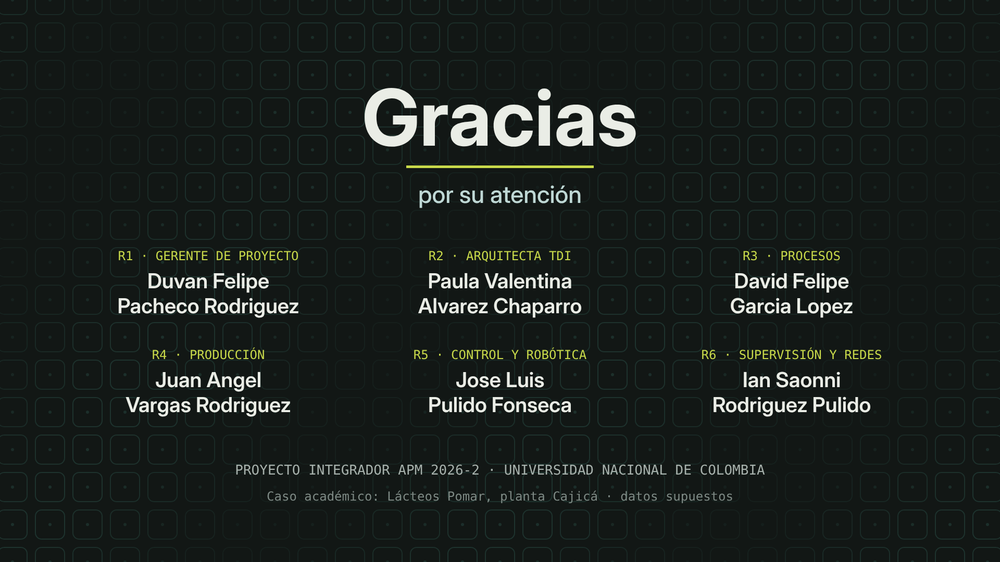
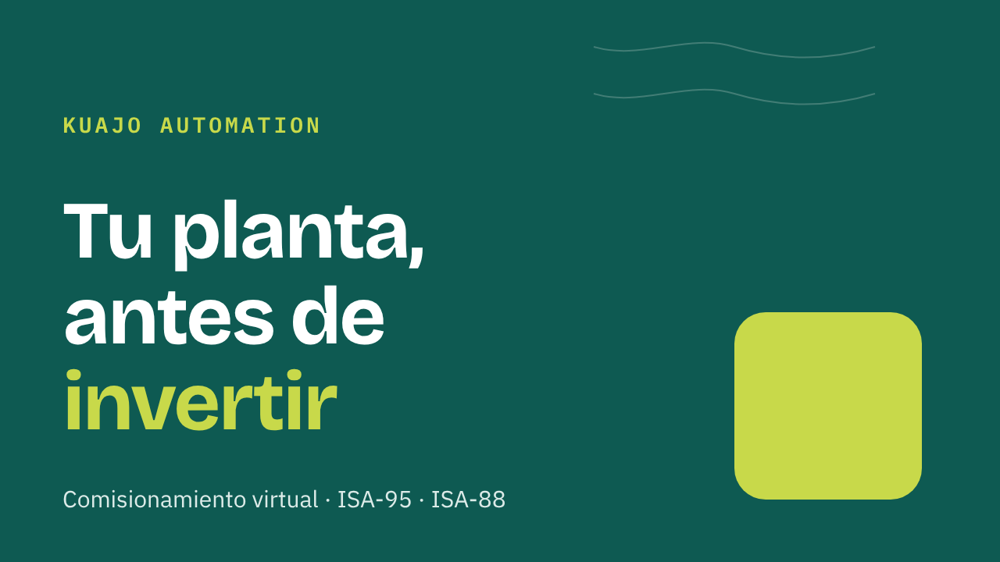
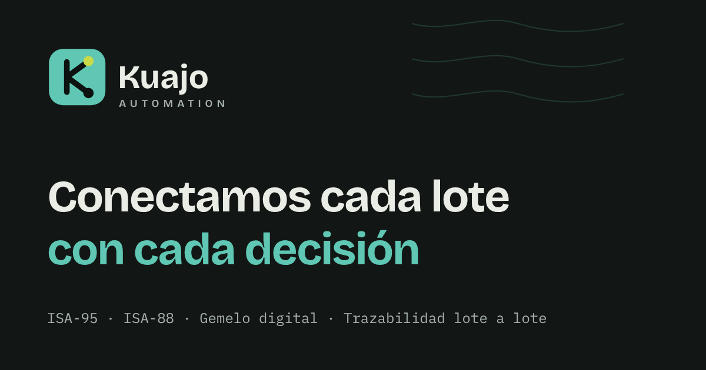
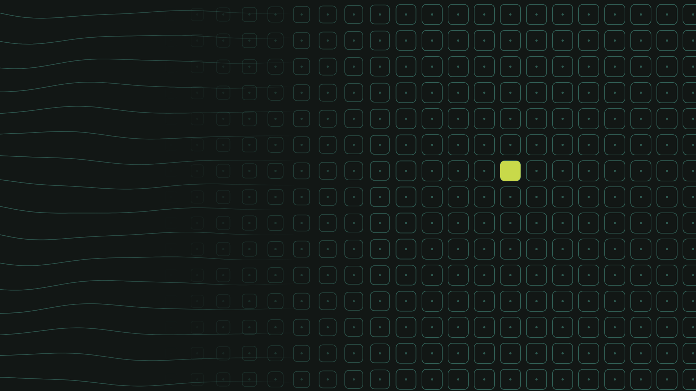

Quiénes somos, por qué nos llamamos así, cómo se ve y cómo habla Kuajo Automation.
VERSIÓN 1.0 · OCTUBRE DE 2026
Kuajo Automation S.A.S. · Proyecto Integrador APM 2026-2 · Universidad Nacional de Colombia · Equipo 2
Caso académico. Kuajo Automation es la empresa del equipo para el curso; no está constituida legalmente. Lácteos Pomar es una empresa real usada como referencia; los datos operativos son supuestos.
Índice
01 · Quiénes somos
Kuajo Automation S.A.S. es una integradora B2B de transformación digital industrial para plantas de alimentos que producen por lotes, empezando por la industria láctea.
Unimos en un solo proyecto el proceso, el control (PLC), la supervisión (SCADA), la gestión de la producción (MES) y el ERP del cliente, siguiendo las normas ISA-95 e ISA-88. Así cada lote queda trazable y cada decisión, del operario al gerente, se toma con datos.
Que ninguna decisión de planta se tome a ciegas.
Conectar el proceso, el control y los sistemas de gestión de plantas de alimentos por lotes para que cada lote sea trazable y cada decisión se apoye en datos confiables.
Ser en 2030 la integradora de referencia en transformación digital para la industria láctea colombiana.
02 · Por qué «Kuajo»
El cuajo es lo que transforma la leche líquida en cuajada: el primer paso para hacer queso. Es, literalmente, el agente de la transformación.
cuajo (del latín coagŭlum)
1. Fermento de la mucosa estomacal de los mamíferos lactantes que coagula la caseína de la leche.
3. Sustancia que se usa para cuajar un líquido.
Diccionario de la lengua española, RAE (dle.rae.es/cuajo)
La metáfora es exacta para lo que hacemos: tomamos datos dispersos de la planta (el «líquido») y los convertimos en información estructurada y útil (la «cuajada»).
03 · El eslogan
Conectamos
INTEGRACIÓN
Unimos proceso, PLC, SCADA, MES y ERP en un solo sistema. Es lo que hace un integrador.
cada lote
ISA-88 · TRAZABILIDAD
El lote es la unidad de la producción por lotes. Cada uno tiene receta, genealogía y datos propios.
con cada decisión
ISA-95 · DATOS
Del operario que cambia una receta al gerente que firma un pedido en SAP: decisiones con datos en línea.
Cada lote, cada decisión.
Para espacios pequeños: redes, etiquetas o encabezados.
04 · Qué representa
Kuajo representa la transformación: de datos sueltos a información, de islas de automatización a una planta conectada, de decisiones por intuición a decisiones con datos.
6 h → < 30 min
Rastrear un lote en un recall pasa de horas en papel a minutos con la genealogía del MES.
≈ +20 %
Se estima subir el OEE de la llenadora de 55 % a ≈ 78 % atacando pérdida por pérdida.
90 → ≈ 35 min
Un solo procedimiento ISA-88 parametrizado produce las 3 recetas.
Gemelo digital
Comisionamiento virtual: el cliente ve sus recetas funcionando antes de comprar un solo equipo.
Proceso → SAP
Integración vertical completa, sin islas ni varios proveedores que se culpan entre sí.
3 líneas
La misma base de SCADA, MES y SAP sirve para las líneas de UHT y quesos.
Cifras del caso académico (Lácteos Pomar, línea de yogures); las metas son estimaciones basadas en cálculos preliminares.
05 · Personalidad y voz
Sabemos de normas y procesos, y se nota, pero sin presumir.
Una idea por frase. Datos concretos antes que adjetivos.
Hablamos como en la planta: operarios, lotes, turnos.
Separamos lo medido de lo estimado y lo decimos.
ASÍ SÍ
«Rastrear un lote toma 6 horas. Con el MES, menos de 30 minutos.»
«Estimamos producir 20 % más sin comprar equipos de proceso.»
«Primero medimos la línea base; después confirmamos la meta.»
ASÍ NO
«Soluciones disruptivas de clase mundial para la Industria 4.0.»
«Garantizamos duplicar su productividad.»
«Sinergias digitales de alto impacto en toda la cadena de valor.»
06 · Concepto visual
RUTA 1
La transformación de líquido a sólido: ondas que se solidifican en una retícula.
Cuenta el origen del nombre, pero sola se ve demasiado «láctea».
RUTA 2 · ELEGIDA
El lote como unidad mínima de decisión, y nodos que conectan planta, sistemas y decisiones.
Une el diferenciador (trazabilidad lote a lote) con la transformación. Técnica y cercana.
RUTA 3
La pirámide ISA-95 como estructura de la marca.
Fiel a la norma, pero genérica: muchas integradoras la usan.

La ruta elegida conserva lo mejor de la primera: en el patrón y en el video, las ondas del líquido «cuajan» en una retícula de lotes, y uno de ellos crece hasta convertirse en el símbolo.
Cuadro del video de introducción de la marca.
07 · El logo
El lote: la unidad de producción. Las esquinas redondeadas evocan el diseño higiénico de la industria de alimentos, sin aristas donde se acumule producto.
La planta: el eje firme del proceso.
Los flujos que salen y entran: datos hacia arriba, órdenes hacia abajo.
El dato que sube desde la planta hacia las decisiones.
La orden que baja: la receta y el plan que llegan al proceso.
Logotipo: «Kuajo» en Bricolage Grotesque 700 y «AUTOMATION» en mayúsculas espaciadas, 600.
08 · Construcción
| Elemento | Medida (unidades de 64) |
|---|---|
| Cuadrado | 60 × 60, margen de 2 |
| Radio de las esquinas | 15 (25 % del lado) |
| Trazo de la K | 6, extremos y uniones redondeados |
| Línea vertical | de (21, 16) a (21, 48) |
| Ramas | de (21, 32) a (40, 18) y a (40, 46) |
| Nodos | radio 5,5 en (44, 15) y (44, 49) |
El trazo de 6 sobre 64 hace que el símbolo se lea incluso a 16 px (favicon). En la versión horizontal, «Kuajo» mide 36 y «AUTOMATION» 11,5 con espaciado de 4,2 sobre la misma retícula.
09 · Versiones
Documentos, web, presentaciones, firmas. Es la versión por defecto.
Portadas, formatos cuadrados o verticales, avatares grandes y empaques.
Favicon, foto de perfil, íconos de aplicación y marcas de agua, cuando la marca ya se conoce.
Cada versión existe en color, negativo, escala de grises, negro y blanco (carpeta 01_logo).
10 · Sobre fondos
Papel · #FBF8F2 → color
Blanco · #FFFFFF → color
Cuajada · #EFE6CF → color
Verde Suero · #0E5A52 → blanco
Noche · #121715 → negativo
Lima Cuajo · #C8D94A → negro
Regla: el fondo y el logo deben tener al menos 3:1 de contraste. Sobre fotografías, usa la versión blanca con una capa oscura detrás (Noche al 60 %).
11 · Blanco y negro
NEGRO · #151A19
BLANCO · #FFFFFF
ESCALA DE GRISES
En las versiones de una tinta la K y los nodos están calados (son huecos en el cuadrado), así el logo funciona sobre cualquier fondo con una sola tinta y se puede cortar en vinilo. La escala de grises convierte cada color con su luminancia (0,299 R + 0,587 G + 0,114 B).
12 · Protección y tamaño
Área de protección: deja alrededor del logo un margen libre igual a x, la mitad de la altura del símbolo (la altura de la K). Ningún texto, borde o imagen entra en esa zona.
| Versión | Pantalla | Impresión |
|---|---|---|
| Horizontal | 120 px de ancho | 30 mm |
| Apilado | 80 px de ancho | 20 mm |
| Símbolo | 16 px | 6 mm |
Por debajo de estos tamaños usa solo el símbolo.
13 · Usos incorrectos
✕Estirar o deformar
✕Rotar
✕Cambiar los colores
✕Agregar sombras o efectos
✕Fondo con poco contraste
✕Otra tipografía
Tampoco: cambiar el orden o el color de los nodos, separar el símbolo del nombre en otra proporción, ni usar el verde de marca para indicar «en marcha» en un SCADA.
14 · Paleta de color
Verde Suero
#0E5A52
RGB 14, 90, 82
CMYK 84 0 9 65
Cuajada
#EFE6CF
RGB 239, 230, 207
CMYK 0 4 13 6
Lima Cuajo
#C8D94A
RGB 200, 217, 74
CMYK 8 0 66 15
Pizarra
#35566B
RGB 53, 86, 107
CMYK 50 20 0 58
Noche
#121715
RGB 18, 23, 21
CMYK 22 0 9 91
Papel
#FBF8F2
RGB 251, 248, 242
CMYK 0 1 4 2
Modo oscuro: fondo Noche #121715, principal Suero claro #5FC7B3 y el mismo lima. CMYK aproximado: validar con prueba de color en imprenta.
15 · Paleta en blanco y negro
| Color | HEX | Equivalente en gris | % de negro | ||
|---|---|---|---|---|---|
| Verde Suero | #0E5A52 | #424242 | 74 % | ||
| Cuajada | #EFE6CF | #E6E6E6 | 10 % | ||
| Lima Cuajo | #C8D94A | #C4C4C4 | 23 % | ||
| Pizarra | #35566B | #4F4F4F | 69 % | ||
| Noche | #121715 | #151515 | 92 % | ||
| Papel | #FBF8F2 | #F8F8F8 | 3 % | ||
| Suero claro | #5FC7B3 | #A6A6A6 | 35 % |
Contraste verificado (WCAG 2.1): #1B2422 sobre #FBF8F2: 14,99 · #4A5754 sobre #FBF8F2: 7,12 · #FFFFFF sobre #0E5A52: 8,07 · #0E5A52 sobre #FBF8F2: 7,61 · #0E5A52 sobre #EFE6CF: 6,49 · #151A19 sobre #C8D94A: 11,29 · #EAEDE6 sobre #121715: 15,32 · #5FC7B3 sobre #121715: 8,89 · #C8D94A sobre #121715: 11,63. El lima sobre papel (1.47:1) no sirve para texto: úsalo solo como relleno o sobre fondo oscuro.
16 · Colores funcionales
La pantalla es neutra; el color se reserva para lo anormal. Siempre acompañado de texto o forma.
Los mismos colores de los diagramas de proceso; siempre con el código Y1, Y2 o Y3.
17 · Tipografía
TÍTULOS
Aa Kuajo
600 y 700. Grotesca con carácter, cálida y moderna; aleja la marca del look «industrial frío».
ABCDEFGHIJKLMNÑOPQRSTUVWXYZ
abcdefghijklmnñopqrstuvwxyz 0123456789
TEXTO
Aa Lote
400, 500 y 600. Diseñada para interfaces técnicas; se lee muy bien en tamaños pequeños y tablas.
ABCDEFGHIJKLMNÑOPQRSTUVWXYZ
abcdefghijklmnñopqrstuvwxyz 0123456789
DATOS
TT-221
500 y 600. Tags de instrumentos, KPI, códigos y etiquetas en mayúsculas espaciadas.
U-221 · pH 4,60 · OEE 78 %
Y1-261005-T1-03
Las tres son libres (SIL Open Font License 1.1). La carpeta 03_tipografia trae los archivos web (woff2) y sus licencias; para instalarlas en el computador descárgalas de fonts.google.com. Si no están disponibles: Arial para títulos y texto, Consolas para datos.
18 · El patrón de lotes

kuajo-patron-fondo-claro · también en versión oscura y como tesela repetible.
Uso: trazo fino al 30–40 % de opacidad, detrás de portadas, separadores y el video. Nunca detrás de texto largo ni de tablas.
19 · Iconografía

Reglas: retícula de 24 × 24, trazo de 1,75 px, extremos y uniones redondeados, sin relleno y en un solo color (currentColor). Se acompañan de su nombre cuando se usan solos.
Evitar engranajes, circuitos, robots humanoides o personas mirando pantallas: son los clichés del sector. Preferir objetos reales de la planta: tanques, llenadoras, lotes.
20 · Aplicaciones

Intro del video · 9 s, el líquido cuaja en lotes y nace el logo.

Outro · agradecimiento, créditos del equipo y logo.

Miniatura de YouTube · 1280 × 720.

Imagen para redes y enlaces · 1200 × 630.

Fondo de portada · presentación y página web.
Página web del proyecto, presentación de la sustentación, README del repositorio, favicon y la plantilla de diapositivas (carpeta 06_aplicaciones).
21 · Investigación del nombre
| Fuente | Qué se buscó | Resultado (12 de octubre de 2026) | Estado |
|---|---|---|---|
| Búsqueda web general | «Kuajo»; «Kuajo» Colombia; «Kuajo» marca o empresa | No apareció ninguna empresa, producto industrial ni marca de servicios de ingeniería con ese nombre. | Sin conflicto aparente |
| Usos existentes del término | — | Artistas musicales (Kuajo Laughter, Kuajo Gyamah), una canción («Kuajo», de Crewman), perfiles personales en Pinterest, Facebook y X (@kuajo) y avisos de Mercado Libre (Argentina y Venezuela) que escriben «kuajo» por «cuajo» al vender fermento para queso. | Ninguno en automatización; confirma la asociación con cuajar |
| RUES · Cámaras de Comercio | Razón social «KUAJO» (control de homonimia) | Consulta manual del equipo en rues.org.co: no aparece ninguna empresa ni establecimiento con ese nombre. | Libre: sin homónimos |
| SIC · SIPI | Marca «KUAJO» en antecedentes marcarios | Consulta manual del equipo en la SIC: no aparece ninguna marca registrada ni solicitud en trámite con ese nombre. | Libre: sin antecedentes |
| Dominios | kuajo.com · kuajo.co | Los sitios bloquean las consultas automáticas; no se confirmó si están libres. | Pendiente: revisar en un registrador |
| Redes y código | @kuajo · kuajoautomation | @kuajo en X ya lo usa una cuenta personal. El equipo usa «kuajoautomation» (organización de GitHub y página). | Resuelto con «kuajoautomation» |
El nombre «Kuajo» está disponible. No hay empresas con esa razón social en el RUES ni marcas en la SIC, y en la web no aparece nadie que lo use en automatización. Como la empresa es académica, todavía no tiene registro propio. Una consulta sin resultados no reserva el nombre: la razón social se asegura al matricularla en la Cámara de Comercio y la marca, al radicarla en la SIC. Lo ideal es que un abogado de propiedad industrial revise la solicitud.
22 · Archivos
| Carpeta o archivo | Contenido |
|---|---|
| 00_Manual_de_marca_Kuajo.pdf | Este documento. |
| 01_logo/svg | 15 logos en curvas (no dependen de la fuente): horizontal, apilado y símbolo × color, negativo, grises, negro y blanco. |
| 01_logo/svg_editable | Los mismos con texto editable (requiere Bricolage Grotesque). |
| 01_logo/png | PNG transparentes en alta resolución y favicons de 16 a 512 px. |
| 01_logo/pdf | Vectores para imprenta. |
| 02_color | Paleta en CSS, JSON, ASE (Adobe) y GPL (GIMP e Inkscape). |
| 03_tipografia | Archivos woff2 de las tres familias y sus licencias OFL. |
| 04_patron | Fondo de lotes claro y oscuro (SVG y PNG 1920 × 1080) y teselas repetibles. |
| 05_iconos | 12 íconos SVG y una hoja de muestra en PNG. |
| 06_aplicaciones | Miniatura de YouTube, imagen para redes, plantilla de diapositivas y cuadros del video. |
| fuente | El HTML con el que se genera este manual. |
RAE, Diccionario de la lengua española, «cuajo» (dle.rae.es/cuajo) · RUES, rues.org.co · Tiendanube, «¿Cómo saber si el nombre de mi empresa ya existe en Colombia?» · Affirma Legal, «¿Cómo saber si una marca está registrada en Colombia?» · Búsquedas web y consultas del equipo en RUES y SIC del 12/10/2026 · Manual de marca v1.0 del proyecto (web/docs/BRAND.md).
Kuajo Automation S.A.S. · Equipo 2: Duvan Felipe Pacheco Rodriguez, Paula Valentina Alvarez Chaparro, David Felipe Garcia Lopez, Juan Angel Vargas Rodriguez, Jose Luis Pulido Fonseca e Ian Saonni Rodriguez Pulido. Proyecto Integrador APM 2026-2, Universidad Nacional de Colombia.